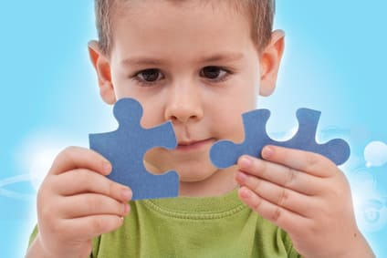

Каждый ребенок развивается в своем собственном уникальном темпе. Некоторые начнут ходить в 8 месяцев, а другие продлят свое младенчество и сделают первые шаги около 15 месяцев. Некоторые в 15 месяцев неудержимо болтают, а другие только произносят первое слово. В этом разделе мы приводим общие рекомендации, как определить, отстает ли ваш ребенок в развитии настолько, что на это надо обратить внимание. Здесь мы сосредоточимся на моторном развитии (двигательные умения).
ПРИЗНАКИ
Развитие очень вариабельно, поэтому не всегда легко определить, когда ребенок отстает настолько, что нуждается в лечении. Любой младенец, который на 2—3 или больше месяцев отстает в приобретении любого из главных навыков, должен быть осмотрен врачом. Мы приводим самый поздний возраст для каждого навыка, а не средний ожидаемый.
Задержка крупной моторики. Это крупные движения тела и силовые навыки. Если ваш ребенок не делает ничего из перечисленного к указанному возрасту, обратитесь к врачу:
Задержка мелкой моторики. Это умение координировать движения глаз и рук. Если ваш ребенок не делает что-то из ниже перечисленного к обозначенному возрасту, сообщите своему врачу:
Задержка социального развития. Это навыки общения, которые должны быть у ребенка. Сообщите своему врачу, если ваш ребенок не делает чего-либо из следующего:
Если ваш ребенок не выполняет один из этих пунктов, это не повод для беспокойства. Но расскажите об этом врачу, так как он может провести всестороннюю полную оценку развития.
СОВЕТ ДОКТОРОВ СИРС: РОДИТЕЛЬСКАЯ ЗАБОТА - ЛУЧШИЙ СТИМУЛЯТОР РАЗВИТИЯ Наука чрезвычайно ясно осветила этот момент: родительская забота (постоянный контакт, общение лицом к лицу, интерактивный стиль воспитания) стимулирует развитие детей в любой области. Если ваш ребенок отстает в чем- либо, повысьте уровень своей связи с ним. |
ФАКТОРЫ, СПОСОБСТВУЮЩИЕ ЗАДЕРЖКЕ
У любого ребенка может отмечаться какая-нибудь задержка, но у некоторых детей риск больше и за ними надо наблюдать более тщательно:
ЛЕЧЕНИЕ
Выжидательный подход — определенно не лучший путь, если выявлена существенная задержка. Вот некоторые очень важные шаги, которые необходимо предпринять.
Станьте личным дефектологом для своего ребенка. Никто не может обеспечить необходимую ребенку ежедневную стимуляцию так, как это сделают родители. Возможно, вы уже делаете это, но нужно еще. Чем больше вы общаетесь с ребенком, используя оживленную мимику, пение, смех, улыбки, тем быстрее он будет прогрессировать в любой области развития. Не забывайте уделять внимание моторным навыкам, но не за счет социальной стимуляции.
Частная терапия. Многие страховки теперь не оплачивают частную терапию (потому что есть государственная), но родители, которые не стеснены в средствах, могут дополнительно заниматься с ребенком у трудотерапевта или логопеда. Также можно вместе с другими детьми и родителями посещать классы по обучению социальным навыкам.
Здоровье ребенка от докторов Сирс / Сирс У. и др.